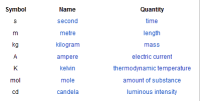
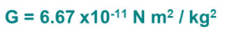
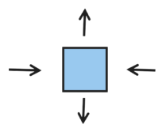
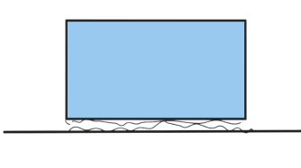

مطالب درسی
مطالب هفتم
کمیت و کیفیت
.کمیت: کیفیتی است که با عدد و رقم بیان میشود و سلیقه ای نیست. هر کمیتی یک کیفیت است
.یکا:ابزاری که یک ها را میشماریم. اولین کار،پیدا کردن ابزار است که کیفیت با پیدا کردن ابزار و انتخاب یکای مناسب تبدیل به کمیت میشود
.یکا های استاندارد 3ویژگی دارند:اندازه آنها قابل تغییر نباشد-قابل دسترس در تمام دنیا باشند-قابل استفاده برای تمامی افراد باشند
انواع یکا
یکی فرعی و یکای اصلی
.یکای اصلی: یکای اصلی اندازه گیری کمیتی را به عنوان یکای اصلی مشخص میکنیم. سپس ابزار را تعریف و روش اندازه گیری را تعریف میکنیم
.یکای فرعی: ترکیبی از بیش از یک یکای اصلی
دستگاه بینالمللی یکاها
جدول پیشوند های یکاها

.تعریف طول: طولی که نور در یک ثانیه طی میکند تقسیم بر سرعت آن
.در جدول پیشوند یکا ها در بالا رفتن واحد در ده به توان منهای یک ضرب میشود و در در پایین رفتن در عدد 10 ضرب میشود البته که در واحد های بزرگتر و کوچکتر این عدد به 1000 و ده به توان منهای 1000 تبدیل میشود
.هر چه پیشوند کمتر شود، یکا دقیق تر میشود
دقت
.دقت:کوچکترین رقم گزارش شده از اعداد یا عدد اندازهگیری شده در آزمایش
.دقت ابزار: کوچکترین درجه بندی ابزار
34600.678+-==>.دقت ابزار یک هزارم است
.مثبت منفی بعد عدد دقت ابزار است که ممکن است بزرگتر یا کوچکتر از آن عدد باشد تا آن محدوده
در گزارش و مبحث دقت هنگامی که از عدد به دست آمده میانگین میگیریم دو انتظار داریم. یک کوچکترین رقم عدد با دقت اندازه گیری کی باشد و دو میانگین را به نزدیک رقم عدد هم رقم با دقت گرد میکینم
.عوامل ایجاد کننده خطا در آزمایش:1)آزمایش کننده. 2)ابزار آزمایش.3)تعداد دفعات آزمایش. 4)محیط آزمایش
زمان
پیدایش زمان از طریق کشاورزی( زمان کاشت و برداشت و آبیاری)
.ویژگی های یکای استاندارد زمان:1)قابل تکرار باشد2)در دسترس باشد 3)غیر قابل تغییر باشد
.از طریق فاصله و زمان میتوان سرعت را حساب کرد
تبدیل واحد سرعت: مثلا وقتی میخواهیم کیلومتر بر ساعت را به دکا متر بر ثانیه تبدیل کنیم در مخرج کسر چون ثانیه 3600 برابرش میشود ساعت، آن را به صورت 3600 ثانیه میگذاریم و کیلومتر به دکا متر هم با تبدیل واحد همین طور و به راحتی به دست میآید
جرم
جاذبه به جرم و فاصله مرتبط است

.شتاب گرانش در زمین تقریباً 9/8 است
.عدد ثابت گرانش است که این فرمول را درست میکند<=G
.جرم:مقدار ماده تشکیل دهنده. وزن:میزانتاثیر جرم بر جاذبه
به دست آوردن وزن: جرم*9/81
.نکته: هل دادن یک انسان سنگین تر از انسان دیگر برای این سخت است که جرمش بیشتر است
ترازو ها
انواع ترازو ها
دیجیتالی( آشپزخانه-باسکول-عقربه ای)** دو کفه ای**سه اهرمی(آزمایشگاهی)
!ترازو ها چیزی که نشان میدهند را به دست نمیآورند
برخلاف تصور برخی، ترازو جرم را به دست نمیآورد بلکه وزن را به دست میآورد و آن را تقسیم بر شتاب جاذبه زمینیعنی 9.81 میکند. به همین دلیل اگه ترازو های دیجیتالی را به ماه ببریم آنها عدد دیگری را نشان میدهند زیرا شتاب جاذبه ماه کمتر از زمین است
حجم
.حجم: مقدار فضایی که هر جسم اشغال میکند
محاسبه حجم اجسام نامنتظم: دو روش داریم
. روش اول: جسم را در ظرفی لبریز از آب بریزیم و مقدار آبی که از جسم بیرون میریزد را حجم آن میگوییم
. روش دوم: استوانه مدرج مقداری آب توی استوانه ی مدرج میریزیم و هر مقداری که بالا آمد را منهای منهای اولیه میکنیم

چگالی
کمیت ها به دو دسته تقسیم میشوند:کمیت های مقداری و کمیت های شدتی
.مقداری: وقتی تعداد بیشتر میشود،اندازه نیز بیشتر میشود. مثل طول و زمان
.شدتی:وقتی تعداد بیشتر میشود،اندازه تغییری نمیکند. مثل چگالی
تاثیر دما و فشار در چگالی
.با افزایش دما، حجم جامدات و مایعات و گاز ها زیاد میشود یعنی چگالی کم میشود
با افزایش فشار حجم جامدات و مایعات اندکی کم میشود ولی در گاز ها به شدت زیادی کم میشود یعنی چگالی آنها زیاد میشود
چگالی انسان
ما اگر ده درصد بدن انسان را هوا به چگالی یک کیلوگرم بر متر مکعب و ده درصد اندام ها با چگالی نهصد و نود و شش کیلوگرم بر متر مکعب و ده درصد استخوان ها به چگالی دو هزار کیلوگرم بر متر مکعب و هفتاد درصد آب به چگالی هزار کیلوگرم بر متر مکعب حساب کنیم میفهمیم که چگالی کل انسان 999.7 کیلوگرم بر متر مکعب است

نیرو
.نیرو یک نوع کمیت برداری است
.برایند بردار: جمع بردار هاست
.نیرو عامل حرکت یا حرکت نکردن است
قوانین نیوتون بزرگوار
قانون اول(اینرسی یا لختی یا تنبلی): اگر جسمی در وضغیت حرکتی ثابت باشد، یعنی نیرو های وارد بر آن همدیگر را خنثی میکنند یعنی برایند
.نیرو های آن صفر است
.در شکل بالا برایند نیرو ها صفر است به همین دلیل شکل حرکت نمیکند

.برایند دو بردار مشکی، بردار سبز را میسازد
.قانون دوم: اول باید تعریف شتاب را بدانیم
تعریف شتاب: شتاب یعنی جسم در مدت زمانی معین با چه سرعتی حرکت میکند پس واحد شتاب متر بر ثانیه که همن واحد سرعت است تقسیم بر واحد زمانی که یک ثانیه است، است
.فرمول شتاب: نیرو تقسیم بر جرم است
a=f/m
قانون سوم(کنش و واکنش):وقتی جسم یک به جسم دو نیرو وارد میکند، جسم دو،نیرویی به همان اندازه و به جهت مخالف به جسم یک وارد میکند
!چرا در کنش و واکنش ما تکون نمیخوریم؟ چون جرم ما بیشتره
نکته: چرا وقتی صندلی را هل میدهیم صندلی تکان میخورد با اینکه طبق قانون سوم صندلی نیز نیروی عکسالعمل میدهد. چون نیرو ها به یک جسم وارد نمیشوند که یکدیگر را خنثی کنند و نیروی صندلی به ما و نیروی ما به صندلی وارد میشود و به یک سمت نیستند
.دیافراگم جسم آزاد یعنی ترسیم تمام نیرو های وارد شده بر یک جسم
انواع نیرو
نیروی وزن
.نیروی وزن جاذبه ضرب در جرم است
نیروی تکیهگاه
زمانی است که هستهی زمین به چیزی که زیر جسم است نیرو وزن را وارد میکند و آن جسم به جسم اصلی نیروی عکسالعمل میدهد که به تکیهگاه میگویند و برابر با نیروی وزن است
.نکته: زمانی که در یک سطح شیبدار، جسمی را بگذاریم نیروی وزن دو قسمت میشود یکی به سمت شیب و یکی به سمت زمین

نیروی فنر
.نیروی فنر برابر است با ضریب سختی فنر×مقداری که فنر را میکشیم
اصطکاک
.اصطکاک یعنی فرورفتگی ها در فرورفتگی ها فرو بروند و سبب اصطکاک شوند
فرمول اصطکاک تکیهگاه×میو
.میو یک ضریب است و از جنس جسم به دست میآید
انواع اصطکاک
.دو نوع اصطکاک داریم
اصطکاک ایستایی و حرکتی
.اصطکاک ایستایی وقتی است که سرعت جسم صفر است
.اصطکاک حرکتی وقتی است که سرعت جسم صفر نیست و از حدی بالاتر نمیرود
نیروی مقاومت هوا
وقتی جسمی در هوا در حال حرکت است ذرات هوا بهش برخورد میکنند و مانند اصطکاک در هوا عمل میکنند و سرعت جسم را کاهش میدهند
.نکته: نیروی مقاومت هوا از یک مقدار مشخصی نمیتواند بیشتر شود
.جسم نوک تیز، مولکول های هوا را انگار به گونه ای میشکافد و باعث میشود نیروی مقاومت هوا کم شود
کار
.محاسبه کار به نیرو و مسافت مربوط است
.کار نیروی اصطکاک و مقاومت هوا همیشه منفی است برای اینکه جهتش مخالف است
.استhاست و در اینجا نیرو وزن و فاصله mgh کار نیروی وزن
انرژی
.انرژی توانایی انجام کار است
.انرژی جنبشی: هر جسمی که حرکت میکند،انرژی جنبشی دارد
.انرژی کشسانی: در فنر خیلی زیاد است چون فنر دوست دارد کار انجام دهد
.است وبرابر است با کار وزن و بستگی به ارتفاع افتادن داردmghانرژی پتانسیل گرانشی : که فرمول معروف
.کار نیروی وزن در صورتی که روبه بالا باشد منفی است و رو به پایین باشد مثبت است
انرژی مکانیکی:مجموع انرژی های جنبشی و پتانسیل گرانشی
انرژی مغناطیسی
انرژی الکتریکی
انرژی هسته ای
.پایستگی انرژی: انرژی نه به وجود میآید نه از بین میرود بلکه از حالتی از انرژی به حالتی دیگر تبدیل میشود
.البته در موضوعات هستهای نقض میشود
گرما
!پنج هزار سال پیش انسان ها گرما را میشناختند ولی به صورت کیفی نه به صورت کمی
.دما=میزان گرمی وقتی دما زیاد شود،جنبش ذرات نیز زیاد میشود
دما:میانگین انرژی جنبشی ذرات ماده
گرما: انرژی در حال انتقال بین دوجسم
.کی دما انتقال پیدا میکند؟ وقتی اختلاف دما وجود داشته باشد
.دماسنج خودش را با جسم همدما میکند و دمای خودش را نشان میدهد
.ما چیزی به نام سرما نداریم! و کمبود گرما را سرما میگوییم که به صورت کیفی است
.ظرفیت گرمایی: به مقاومت یک ماده به تغییر دما، ظرفیت گرمایی میگویند. برای همین از جیوه که ظرفیت گرمایی کمی دارد برای دماسنج استفاده میکنند
تبدیل واحد گرما
مثلاً تبدیل سانتیگراد به فارنهایت دمای حوش و یخ زدن آب را در هرکدام پیدا میکنیم بعد منهای هم میکنیم و تقسیم بر دمای جوش آب در واحد اصلی میکنیم تا دمای هر یک درجه آن به دست آید

روش های انتقال گرما
.جنس مواد: جنس مواد در انتقال گرما تاثیر دارد! در فلزات بیشترین انتقال و در هوا کمترین انتقال وجوددارد
.سطح تماس: سطح تماس هم در مقدار انتقال تاثیر دارد؛ اجسامی که سطح تماس کمتری دارند،کمتر گرما را انتقال میدهند و اجسامی که سطح تماس بیشتری دارند، بیشتر انتقال میدهند
.اختلاف دما:طبق مطالب قبلی گرما بر اثر اختلاف دما جابجا میشود وطبیعتاً هر چه اختلاف دما بیشتر باشد، گرمانیز بیشتر انتقال پیدا میکند
.ضخامت: میتوان به پتو اشاره کرد! پتو به دلیل داشتن ضخامت زیاد مانع از رفتن گرمای درون پتو میشود و گرما را حفظ میکند و انتقال گرما را کاهش میدهد
.همرفت: یک نوع انتقال گرما هست که در زندگی روزمره آن را مشاهده میکنیم
.همرفت چگونه است؟ هوای گرم جرم کمتری نسبت به هوای سرد دارد به خاطر همین بالا میرود و هوای سرد به دلیل داشتن جرم زیادتر، به پایین میرود
تا حالا به دلیل اینکه چرا کولر بالای در یا نزدیک سقف خانتان است فکر کرده اید؟
یا اینکه چرا بخاری و شوفاژ ها روی زمین یا بر روی دیوار پایین نصب میشود؟
.تابش: همه اجسام میتابند و دلیل تابش نیز نیاز بدن به تخلیه کردن انرژی اضافی بدن است که از طریق تابش تخلیه میشود
.همه اجسام میتابند و تابش هم گرما تولید میکند هم نور
هفتمی های عزیز مطالب امسالتان تموم شد! به امید موفقیت
😁